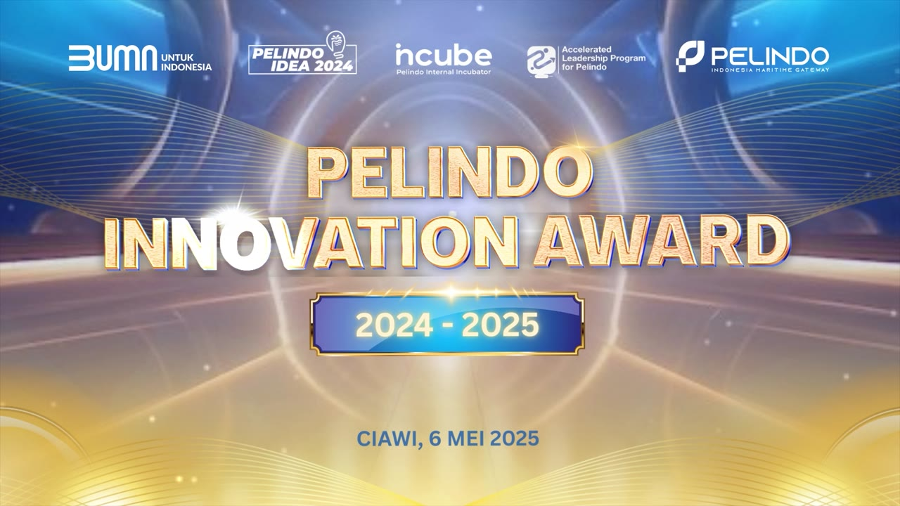
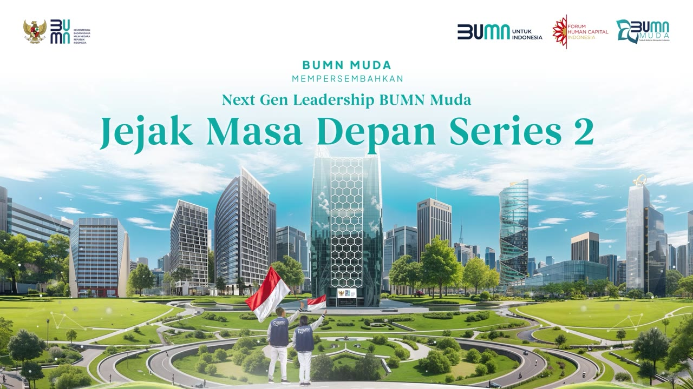
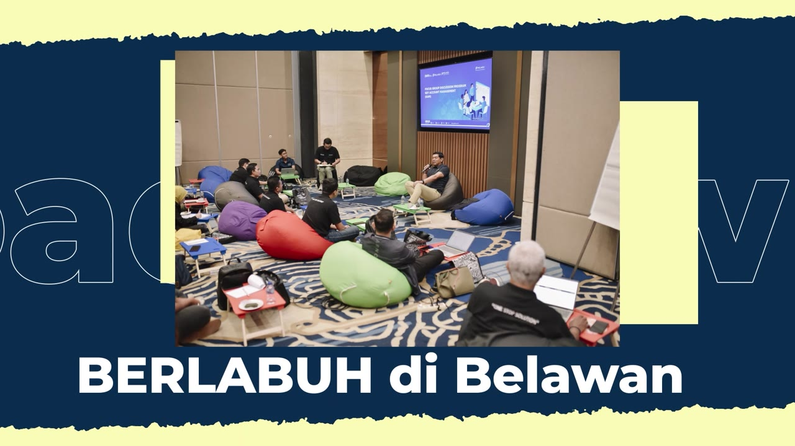
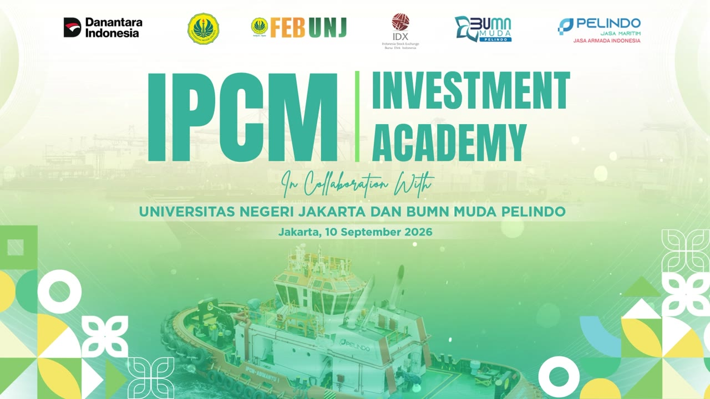
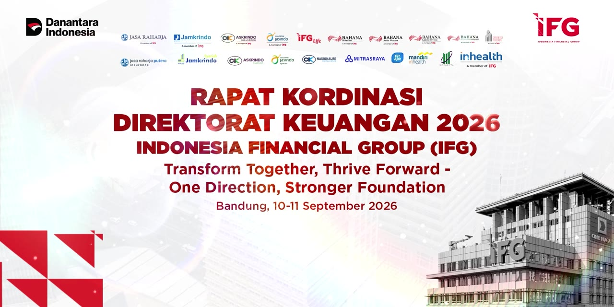
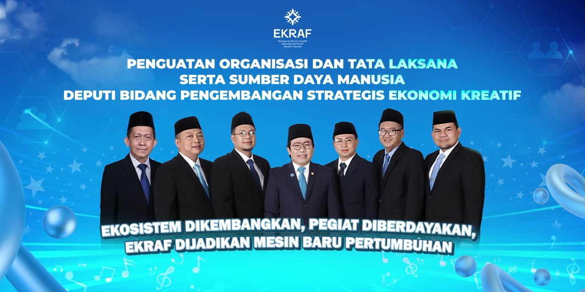
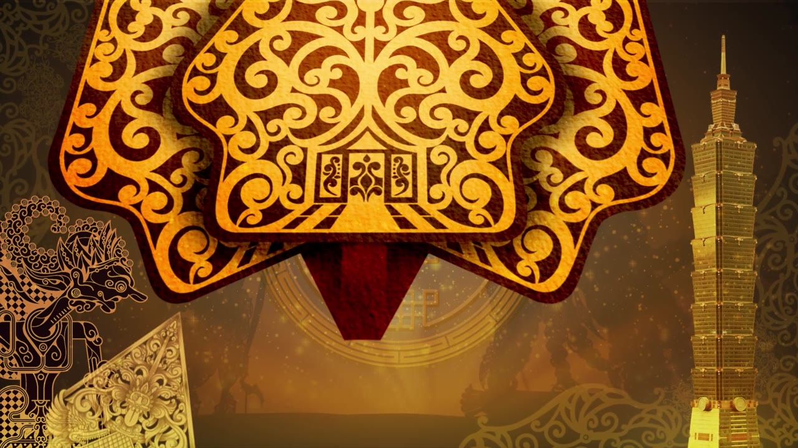

Daffa Fairuzya — selected motion graphics, video editing and event visuals
SELECTED WORK
12 PROJECTS








Drag or scroll the gallery to move in any direction. Select a project to open it. Switch to View list to browse all 12 projects using the keyboard.